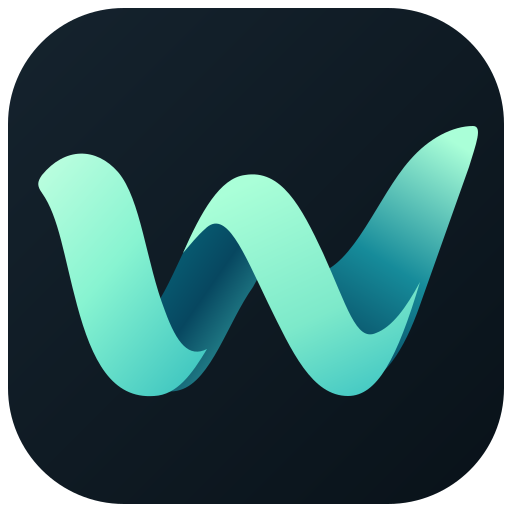
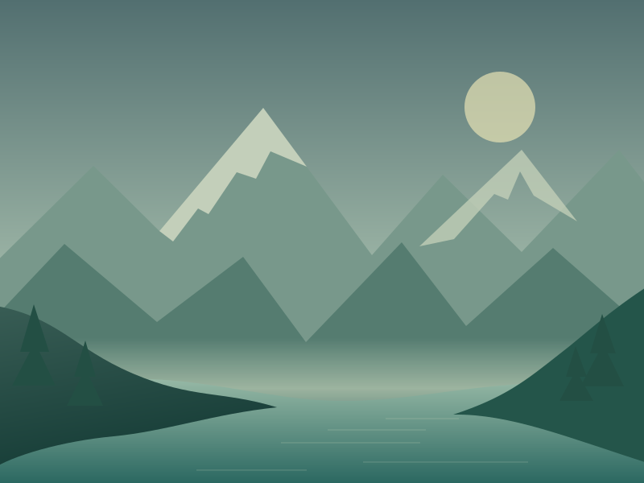
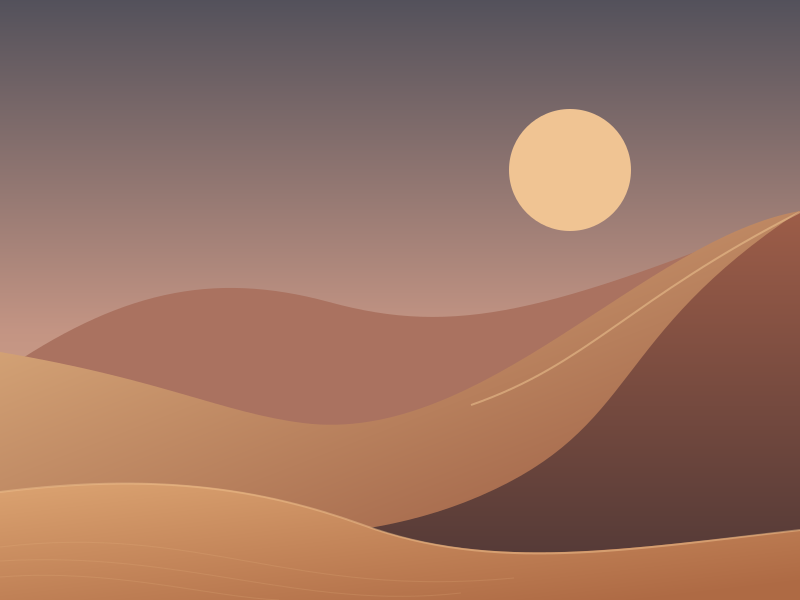
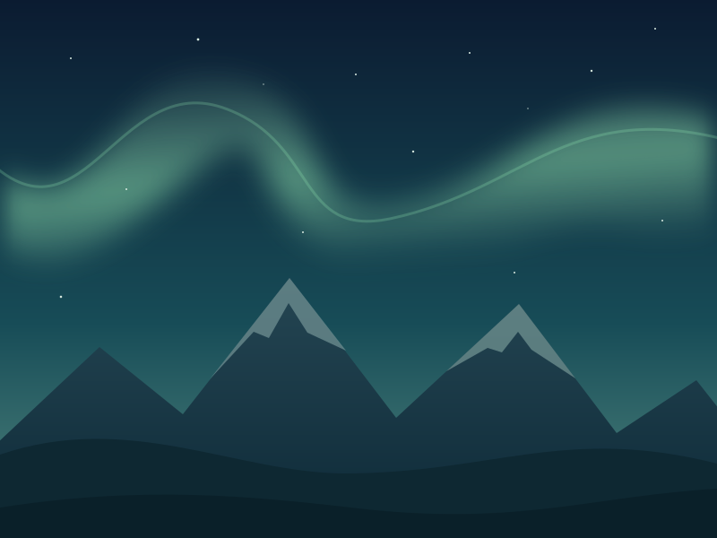

Matched to your interests
Set your favorite topics in the settings and WallWave finds wallpapers from connected sources. Or add a folder of your own images.
naturespaceminimalism

WallWave.Your desktop. Your interests.
Set your interests.
Keep what you love. Change the background to suit your mood — or let WallWave do it.

Where it is quiet ♡
Warm horizon ♡
After sunset ♡Illustration of the interface and wallpapers
Not just a new picture.
A place you are glad to come back to.
Mountains, illustrations, space or your own photos.
Build your desktop around what matters to you.
01 / Selection with character
Start by setting your interests.
Add the rest whenever you like.
Set your favorite topics in the settings and WallWave finds wallpapers from connected sources. Or add a folder of your own images.
Keep what you like, save some for later and remove the rest. Ratings help refine the selection.
Turn on automatic changes by interval or schedule. With several monitors, use separate settings or one wallpaper across all screens.
Wallhaven · NASA Images · Wikimedia Commons · personal folders · and more
Optional on-device AI
Mark what you like and what you don’t. Once there are enough ratings, a local model helps find visually similar images.
Analysis runs on your computer. Images and ratings are not sent to an external AI. Internet access is needed for online sources and the first model download.
What AI requires02 / It starts with an interest
No programming needed.
Start without AI or automation.
Open WallWave.exe, choose a folder for the app and wait for the first start.
In the settings, enter a few topics such as nature, mountains, space. Wallhaven is a good source to start with.
Start a manual wallpaper download, open an image you like and choose Set.
AI and automatic changes start switched off. You decide when to turn them on.
03 / Add something of your own
WallWave for Windows.
Free and open source.
The app is still evolving. If you find a bug, you can report it on GitHub.
No. Interest-based selection, personal folders, ratings and automatic changes all work without AI. You can turn on the local model later. Its selection is probabilistic and is not guaranteed to match your taste.
Basic SFW selection on Wallhaven and personal folders need no WallWave account. Some other sources, such as Pixabay and DeviantArt, require their own access keys. The terms are shown in the source settings.
Wallpapers, ratings, settings and keys are stored in your library on your computer. Online sources receive search and download requests, and the model downloads from Hugging Face when AI is first enabled. So on-device AI does not mean no network requests at all. More about data storage (in Russian) ↗
Yes. In Sources, add a local folder and point it at your images. You can use only your own files and connect no online sources.
This page offers the Windows version. A separate Android version is in development, and a download button will appear once a public release is ready. Ready-made macOS and Linux versions are not offered here.
Rights to wallpapers stay with their authors. An image being available from a source does not mean it can be used in any way. Check the license on the original page, which you can open from the wallpaper’s card in the app.